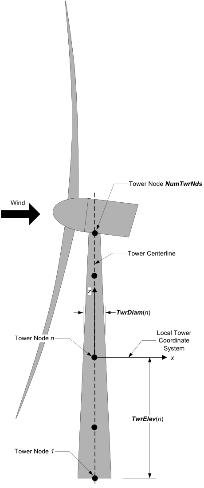
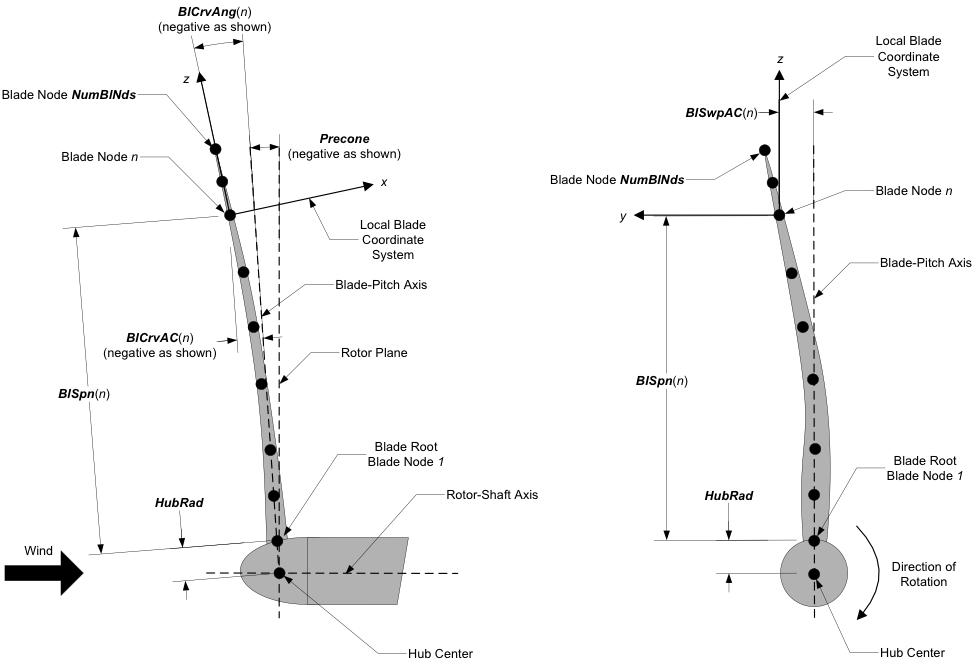

4.3.3. 입력 파일
4.3.3.1. v4.0에 도입된 중요한 변경 사항
버전 4.0부터 몇 가지 중요한 변경 사항이 도입되었습니다. 참고하세요 v4.x부터 AeroDyn 변경 사항 이전 입력과 새 입력 사이의 링크를 이해합니다.
아래 문서는 이러한 변경 사항을 통합하도록 업데이트되었습니다.
4.3.3.2. 소개
사용자는 기본 AeroDyn 입력 파일과 에어포일 및 블레이드 데이터에 대한 별도의 입력 파일을 통해 공기 역학 모델 매개변수를 구성합니다. 독립형 모드에서 사용하는 경우 추가 드라이버 입력 파일이 필요합니다. AeroDyn 드라이버 및 드라이버 입력 파일에 대한 자세한 내용은 섹션 4.3.6. 드라이버 파일은 일반적으로 OpenFAST에서 AeroDyn에 제공되는 초기화 입력과 AeroDyn에 대한 시간 단계별 입력을 지정합니다.
예를 들어, driver.dvr 파일이 주요 드라이버이고, input.dat 기본 입력 파일입니다. blade.dat 파일에는 블레이드 형상 데이터가 포함되어 있으며 airfoil.dat 파일에는 익형 받음각, 양력, 항력, 모멘트 계수 및 압력 계수가 포함되어 있습니다. 예제 입력 파일은 다음에 포함되어 있습니다. 섹션 4.3.11.
행 수가 지정된 테이블과 AeroDyn 에어포일 데이터 파일의 주석 행을 제외하고 입력 파일에서 행을 추가하거나 제거해서는 안 됩니다.
4.3.3.2.1. 단위
AeroDyn는 SI 시스템(kg, m, s, N)을 사용합니다. 별도로 지정하지 않는 한 각도는 라디안 단위로 간주됩니다.
4.3.3.3. 일반 옵션
다음을 설정합니다: Echo AeroDyn가 AeroDyn 기본, 에어포일 및 블레이드 입력 파일의 내용을 에코하도록 하려면 TRUE에 플래그를 지정하세요(입력 파일의 오류를 디버깅하는 데 유용함). 에코 파일의 명명 규칙은 다음과 같습니다. OutRootFile.AD.ech. OutRootFile AeroDyn 독립형 실행 시 드라이버 입력 파일의 I/O SETTINGS 섹션에 지정되거나 결합 시뮬레이션 실행 시 OpenFAST 프로그램에 의해 지정됩니다.
DTAero 공기역학적 계산을 위한 시간 단계를 설정합니다. 정확성과 수치 안정성을 위해 다음을 권장합니다. DTAero 로터 회전당 최소 200개의 방위각 단계가 있도록 설정되어야 합니다. 그러나 AeroDyn가 OpenFAST에 결합되면 OpenFAST는 이 경험 법칙보다 훨씬 작은 시간 단계가 필요할 수 있습니다. 매우 작은 시간 간격을 사용하는 동안 UA가 활성화된 경우 UA 루틴의 수치 문제를 방지하기 위해 AeroDyn를 배정밀도로 다시 컴파일해야 할 수도 있습니다. 키워드 DEFAULT
대해 DTAero AeroDyn가 드라이버 코드(OpenFAST 또는 독립 실행형 드라이버 프로그램)에 규정된 시간 간격을 사용해야 함을 나타내는 데 사용될 수 있습니다.
Wake_Mod
세트 Wake_Mod 유도 속도가 0이 되도록 하려면 0으로 설정합니다. BEM 이론 모델을 사용하여 이러한 효과를 포함하려면 1로 설정하십시오. 언제 Wake_Mod 3으로 설정되면 OLAF라고도 하는 자유 와류 후류 모델이 사용됩니다.
섹션 4.4). Wake_Mod 선형화 분석 중에는 3으로 설정할 수 없습니다.
참고
이전 입력에 대한 링크: 이전 입력 WakeMod 제거되고, WakeMod=2 예전에는 DBEMT를 의미했지만 이제는 다음을 사용하여 제어됩니다. DBEMT_Mod. Wake_Mod=2 향후 유도 계산 방법에 대한 자리 표시자입니다.
~~AFAeroMod~~
이 입력은 제거되었습니다. 보다 UA_Mod 아래에.
~~FrozenWake~~
이 입력은 제거되었습니다. 보다 DBEMT_Mod 아래에.
세트 TwrPotent 블레이드에 국지적인 유체 흐름에 대한 타워의 포텐셜 유동 영향을 비활성화하려면 0으로 설정하고, 표준 포텐셜 유동 모델을 활성화하려면 1로 설정하고, 포텐셜 유동 모델에 Bak 보정을 포함하려면 2로 설정합니다.
다음을 설정합니다: TwrShadow 타워 그림자 모델을 비활성화하려면 0으로 설정하고, Powles 타워 그림자 모델을 활성화하려면 1로 설정하고, Eames 타워 그림자 모델을 사용하려면 2로 설정합니다. 이 모델은 하류 타워 그림자 모델을 기반으로 블레이드에 국지적인 흐름에 대한 타워의 영향을 계산합니다. 잠재적 흐름과 타워 그림자의 타워 영향이 모두 활성화된 경우 두 가지 영향이 중첩됩니다.
다음을 설정합니다: TwrAero 타워의 유체 항력 하중을 계산하려면 TRUE로 플래그를 지정하고 이러한 효과를 비활성화하려면 FALSE로 플래그를 지정하세요.
AeroDyn 결합 OpenFAST 및 BEM 활성화를 통한 선형화 분석 중(Wake_Mod = 1), 설정
DBEMT_Mod=-1 고정 후류 가정을 사용합니다(즉, 축 방향 및 접선 방향 유도 속도를 고정하고 선형화 중 작동점 값에서) 또는
DBEMT_Mod=3 연속 동적 웨이크 모델을 사용합니다.
다음을 설정합니다: CavitCheck TRUE에 플래그를 지정하여 MHK 터빈에 대한 캐비테이션 검사를 수행하거나 FALSE에 플래그를 지정하여 이 계산을 비활성화합니다. 만약에 CavitCheck TRUE입니다. UA_Mod 불안정한 익형 공기 역학에서는 캐비테이션 검사가 작동하지 않으므로 0으로 설정해야 합니다. 만약에 CavitCheck TRUE입니다. MHK AeroDyn 또는 OpenFAST 드라이버 입력 파일의 플래그는 MHK 터빈이 모델링되고 있음을 나타내기 위해 1 또는 2로 설정되어야 합니다.
다음을 설정합니다: NacelleDrag 나셀의 항력 하중을 계산하려면 TRUE로 플래그를 지정하고, 이 계산을 비활성화하려면 FALSE로 설정하세요.
다음을 설정합니다: CompAA 공력소음 계산을 실행하려면 TRUE에 플래그를 지정하세요. 이 옵션은 다음에서만 사용할 수 있습니다. Wake_Mod = 1 MHK 터빈에는 사용할 수 없습니다. 섹션을 참조하세요 섹션 4.5 이 기능을 사용하는 방법에 대한 정보를 확인하세요.
해당 AA_InputFile 항공음향 하위 모듈에 대한 입력 파일을 지정하는 데 사용됩니다. 보다 섹션 4.5 이 기능을 사용하는 방법에 대한 정보를 확인하세요.
4.3.3.4. 환경 조건
환경 조건은 이제 드라이버 입력 파일에 지정되지만 레거시 호환성을 위해 AeroDyn 기본 입력 파일에 남아 있습니다. 키워드를 사용하세요
DEFAULT 드라이버 입력 파일에 지정된 값을 전달합니다. 그렇지 않으면 AeroDyn 기본 입력 파일에 제공된 값이 드라이버 입력 파일에 제공된 값을 덮어씁니다. AirDens 유체 밀도를 지정하며 0보다 큰 값이어야 합니다. 일반적인 값은 약 1.225kg/m입니다.3 공기용(풍력 터빈) 및 1025kg/m3 해수용(MHK 터빈).
KinVisc 유체의 동점도를 지정합니다(레이놀즈 수 계산에 사용됨). 일반적인 값은 약 1.460E-5m입니다.2/s(공기, 풍력터빈) 및 1.004E-6 m2/s(해수, MHK 터빈)입니다. SpdSound 는 유체 내 소리의 속도입니다(비정상 익형 공기 역학 계산 내에서 마하 수를 계산하는 데 사용됨). 일반적인 값은 공기(풍력 터빈)의 경우 약 340.3m/s이고 해수(MHK 터빈)의 경우 1500m/s입니다. 이 섹션의 마지막 두 매개변수는 다음과 같은 경우에만 사용됩니다.
CavitCheck = TRUE MHK 터빈용. Patm 자유 표면 위의 대기압입니다. 일반적으로 약 101,325 Pa입니다. Pvap
유체의 증기압입니다. 바닷물의 경우 이는 일반적으로 약 2,000Pa입니다.
4.3.3.5. 블레이드 요소/운동량 이론 옵션
BEM_Mod 사용할 BEM 알고리즘의 종류를 결정합니다.
BEM_Mod=2(권장)은 로컬 엇갈린 극좌표 좌표계를 사용하는 새로운 AeroDyn BEM 구현을 사용하며, 이는 대형 원추형에 더 적합합니다. 또한 큰 스큐에 중요한 선택적 운동량 보정도 포함되어 있습니다(참조:SkewMomCorr). 이 기능은 나중에 문서화될 예정입니다.BEM_Mod=1(이전 버전과의 호환성을 위해) NoSweepPitchTwist 좌표계를 사용하는 이전 AeroDyn BEM 구현을 사용합니다.
참고
이전 입력에 대한 링크: 이전 구현에서는 BEM_Mod=1 암시.
경고
BEM_Mod 현재 "x" 및 "y"로 끝나는 출력과 같이 "잘못 정의된" 출력(지정된 좌표계가 없는 출력)에 사용되는 좌표계를 제어합니다. 잘못 정의된 다른 출력은 "AxInd", "TnInd", "Phi" 등과 같은 일반적인 BEM 수량입니다. 이들은 다음에 따라 다른 좌표계에서 정의됩니다. BEM_Mod. 다양한 항목 간의 일관성을 위해 Wake_Mod (때에도 Wake_Mod/=1), 우리는 BEM_Mod 잘못 정의된 출력의 좌표계를 결정합니다.
이 섹션의 다음 입력은 다음 경우에만 사용됩니다. Wake_Mod = 1.
Skew_Mod
Skew_Mod 편향 보정 모델을 결정합니다(요 및 기울기에 대해):
Skew_Mod=1: Glauert의 왜곡 모델을 활성화합니다(권장). 이 모델에는 운동량 보정(SkewMomCorr` `), and a velocity redistribution model (``SkewRedistr_Mod).Skew_Mod=0왜곡된 모델이 전혀 없음을 의미합니다(권장되지 않음).Skew_Mod=-1비정규 구성요소를 버립니다(선형화를 위해). 이 설정은 로터가 바람에 수직이 아닌 경우(예: 타워 상단 기울어짐 또는 기울임) 풍속의 주기적인 변화를 제한하기 위해 풍속이 항상 로터에 수직인지 확인합니다. 이는 대부분 선형화에 필요합니다.
현재 (Skew_Mod=0) 또는 (Skew_Mod=1 및 SkewModCorr=False 및 SkewRedistr_Mod = 0)가 동일하면 두 입력 세트 모두 왜곡 보정을 완전히 끕니다.
참고
이전 입력에 대한 링크: 이전 구현에서는 항상 왜곡 모델이 켜져 있었습니다. Skew_Mod=-1 오래된 것을 대체합니다 SkewMod=0 (몇몇 사용자가 사용하고 있던 옵션).
SkewMomCorr
스큐 운동량 보정을 켜거나 끕니다. [다음의 경우에만 사용됨] Skew_Mod=1] 이 기능은 나중에 문서화될 예정입니다.
참고
이전 입력에 대한 링크: 이전 동작은 다음과 같습니다. SkewMomCorr=거짓
SkewRedistr_Mod
SkewRedistr_Mod 유도된 속도 재분배 모델을 켜고 끌 수 있으며, 다른 모델을 선택/구현할 수 있는 공간을 제공합니다. 기본값은 1입니다.
0: 재배포 없음
1: Glauert(Pitt-Peters) 재분배 모델
SkewRedistrFactor
Glauert 재분배 모델에 사용되는 상수를 정의합니다(SkewRedistr_Mod=1). 사용 "default" 기본값을 사용하려면 \(\frac{15 \pi}{32}\).
4.3.3.6. BEM 알고리즘 옵션
세트 TipLoss Prandtl 팁 손실 모델을 포함하려면 TRUE로, 비활성화하려면 FALSE로 설정하세요. 마찬가지로 설정 HubLoss Prandtl 허브 손실 모델을 포함하려면 TRUE로, 비활성화하려면 FALSE로 설정하세요.
세트 TanInd BEM 솔루션에 접선 유도(각운동량 균형에서)를 포함하려면 TRUE로, 이를 무시하려면 FALSE로 지정합니다. 세트 AIDrag 축 유도 계산에 항력을 포함하려면 TRUE로, 무시하려면 FALSE로 설정하세요. 만약에 TanInd = TRUE, 세트
TIDrag 접선 유도 계산에 항력을 포함하려면 TRUE로, 무시하려면 FALSE로 설정하세요. BEM 반복에서 항력이 사용되지 않는 경우에도 유도가 발견되면 항력을 사용하여 절점 하중을 계산합니다.
IndToler BEM 솔루션의 반복 비선형 해석에 대한 수렴 임계값을 설정합니다. 비선형 해석은 유입 각도에 관한 것이지만 IndToler 물리적 연관이 불가능한 무차원 잔차 방정식의 공차를 나타냅니다. 키워드가 나올 때 DEFAULT 숫자 값 대신 사용됩니다.
IndToler AeroDyn가 단정밀도로 컴파일되면 5E-5로 설정되고, AeroDyn가 배정밀도로 컴파일되면 5E-10으로 설정됩니다. 이러한 기본값을 사용하는 것이 좋습니다. MaxIter BEM 해석의 최대 반복 단계 수를 결정합니다. BEM 풀이의 잔차 값이 다음과 같거나 작지 않은 경우 IndToler 에서
MaxIter, AeroDyn는 BEM 솔버를 종료하고 오류 메시지를 반환합니다.
4.3.3.7. 전단 보정
전단을 고려하여 BEM 알고리즘을 수정해야 할 수도 있습니다. 현재, 블레이드 회전에 따른 풍속 변화와 관련된 변동을 제한하기 위해 섹터 평균 보정이 베타 기능으로 구현되었습니다.
이 기능은 나중에 문서화될 예정이며 아직 실험 단계에 있습니다.
SectAvg 섹터 평균화(플래그)를 사용합니다. 이 방법은 블레이드의 현재 방위각을 기준으로 앞뒤로 확장되는 섹터를 사용합니다(참조). SectAvgPsiBwd 및 SectAvgPsiFwd). 속도는 섹터의 서로 다른 지점에서 서로 다른 가중치를 부여하여 이 섹터 내에서 평균화됩니다(참조: SectAvgWeighting).
SectAvgWeighting 부문 평균에 대한 가중치 함수입니다. 1=균일(스위치) [다음 경우에만 사용됨 SectAvg=True]. 기본값은 1입니다.
SectAvgNPoints 섹터당 포인트 수(-) [다음 경우에만 사용됩니다. SectAvg=True]. 기본값은 5입니다.
SectAvgPsiBwd 섹터가 시작되는 블레이드 방위각을 기준으로 한 후방 방위각(도 단위)입니다. 음수여야 합니다. [SectAvg=True인 경우에만 사용됨]. 기본값은 -60도입니다.
SectAvgPsiFwd 섹터가 끝나는 블레이드 방위각을 기준으로 한 전방 방위각(도 단위)입니다. 긍정적이어야 합니다. [SectAvg=True인 경우에만 사용됨]. 기본값은 60도입니다.
4.3.3.8. 동적 웨이크/동적 유입 모델
이 섹션의 입력 매개변수는 다음 경우에만 사용됩니다. Wake_Mod = 1. 이론은 에 설명되어 있습니다. 섹션 4.3.7.2.
동적 후류(동적 유입이라고도 함) 모델은 입력에 의해 제어됩니다. DBEMT_Mod:
0: 동적 깨우기가 없습니다. 준정상 깨우기 모델이라고도 합니다(권장되지 않음).-1: 동결 후류, 주어진 작동점에서 유도된 속도는 일정하게 유지됩니다(단순화된 선형화에만 유용함).1: 이산시간 Oye의 모델, 상수 \(\tau_1\)2: 이산시간 Oye의 모델, 다양한 \(\tau_1\), 유입량에 따라 자동으로 조정됩니다. (시간 영역 시뮬레이션에 권장)3: 연속시간 Oye의 모델, 상수 \(\tau_1\) (선형화에 권장)
을 위한 DBEMT_Mod=1 또는 DBEMT_Mod=3 값을 설정하는 것은 사용자의 책임입니다. \(\tau_1\) (i.e. tau1_const)에 주어진 표현에 따르면 섹션 4.3.7.2, 평균 축 방향 유도(\(\overline{a}\)) 및 로터를 가로지르는 평균 상대 풍속(\(\overline{U_0}\))은 주어진 시뮬레이션을 위한 것입니다.
옵션만 DBEMT_Mod={-1,3} 선형화에 사용될 수 있습니다.
참고
이전 입력에 대한 링크: 옵션 DBEMT_Mod=-1 이전과 동일한 동작을 가지고 있습니다. FrozenWake=참. DBEMT_Mod=0 이전과 동일한 동작을 수행합니다. WakeMod=1 옵션. DBEMT_Mod=J (J 에서 1,2,3) , 이전과 동일한 동작을 갖습니다. WakeMod=2 & DBEMT_Mod=J
4.3.3.9. OLAF – cOnvecting LAgrangian 필라멘트(자유 소용돌이 후류) 이론 옵션
이 섹션의 입력 매개변수는 다음 경우에만 사용됩니다. Wake_Mod = 3.
자유 와류 후류 모델에 대한 설정은 다음에 설명된 OLAF 입력 파일에 설정되어 있습니다. 섹션 4.4.4. OLAFInputFileName 이 입력 파일의 파일 이름입니다.
4.3.3.10. 비정상 익형 공력 옵션
AoA34
기본 받음각이 3/4 코드에서 샘플링되는지 아니면 공기역학적 중심점에서 샘플링되는지 결정합니다. 최대 UA_Mod 요구할 것이다 AoA34 true로 설정됩니다. 그러나 준정상 공기역학을 사용할 때 사용자는 이를 true 또는 false로 설정하기를 원할 수 있습니다.
경고
이 기능은 현재 개발자 및 개발 불안정 나뭇가지.
참고
이전 입력에 대한 링크: AFAeroMod=1 암시한다 AoA34=거짓. 그러나 정상 및 비정상 공기역학 모델을 공정하게 비교하려면 다음과 같이 설정하는 것이 가장 좋습니다. AoA34=참 준안정 에어로를 할 때.
UA_Mod UA 모델을 결정합니다. 다음과 같은 옵션이 있습니다:
0: 불안정한 arifoil 공기 역학이 없습니다.1: Beddoes-Leishman(B-L)의 이산시간 모델(현재 작동하지 않음),2: González가 개발한 B-L 확장(Cn, Cc, Cm의 변경)3: Minnema/Pierce가 개발한 B-L 확장(Cc 및 Cm의 변경)4: Hansen, Gaunna 및 Madsen이 개발한 4상태 연속시간 B-L 모델(HGM). NOTE: 엄격한 적분기가 구현될 때까지 더 작은 시간 단계가 필요할 수 있습니다.5: HGM와 유사한 5상태 연속시간 B-L 모델(와류 생성을 위한 추가 상태 포함)6: Oye가 개발한 1상태 연속시간7: 이산시간 Boeing-Vertol(BV) 모델
Linearization는 다음과 같이 지원됩니다. UA_Mod=4,5,6 (연속시간 상태를 사용함) 그러나 다른 모델에서는 그렇지 않습니다. 다양한 모델에 대한 설명은 다음과 같습니다. 섹션 4.3.8.
참고
이전 입력에 대한 링크: If UA_Mod>0, 그러면 이것은 이전과 동일합니다. AFAeroMod=2.
모든 UA 모델이 이 설명서에 설명되어 있지만 원래 B-L 모델은 아직 작동하지 않습니다. 테스트 결과 UA 모델 매개변수가 주어진 에어포일, 레이놀즈 수 및/또는 마하수에 대해 적절하게 설정된 경우 González 및 Minnema/Pierce 모델은 수직력, 접선력 및 피칭 모멘트 계수의 합리적인 히스테리시스를 생성하는 것으로 나타났습니다. 그러나 기본 UA 모델 매개변수를 사용하더라도 버전 간 UA 모델 논리의 차이로 인해 결과가 이전 버전의 AeroDyn(B-L에 대한 Minnema/Pierce 확장을 기반으로 함)와 약간 다릅니다. 사용자는 균일한 유입 및 고정된 요 오류(예: 독립 실행형 AeroDyn 드라이버를 통해)로 테스트 사례를 실행하여 수직력, 접선력 및 피칭 모멘트 계수 히스테리시스의 정확성을 검사하고 UA 모델 매개변수를 적절하게 조정하는 것이 좋습니다.
FLookup 무차원 분리 거리 값이 어떻게 결정되는지, f’, 계산됩니다. 언제 FLookup TRUE로 설정되어 있습니다. f’
정적 양력 계수와 항력 계수 데이터를 조회하여 결정됩니다. 최적 지수 방정식(``FLookup = FALSE``)을 사용할 수 없으므로 이 AeroDyn 버전에서는 ``FLookup``가 ``TRUE``여야 합니다. 메모, FLookup 다음과 같은 경우에는 사용되지 않습니다. UA_Mod=4 또는 UA_Mod=5.
UAStartRad 동적 실속이 켜질 시작 로터 반경입니다. 회전자 반경의 일부를 나타내는 0에서 1 사이의 숫자를 입력하여 비정상 공력이 활성화되기 시작하는 위치를 나타냅니다. 이 줄이 입력 파일에서 생략되면, UAStartRad 기본값은 0(블레이드 루트에서 켜짐)입니다. 다음보다 작은 로터 반경에 위치한 모든 블레이드 노드 UAStartRad 전체 시뮬레이션에서 비정상 공력이 꺼집니다.
UAEndRad 동적 실속이 켜질 종료 로터 반경입니다. 비정상 공기 역학을 켜야 하는 마지막 로터 반경을 나타내기 위해 로터 반경의 일부를 나타내는 0에서 1 사이의 숫자를 입력합니다. 이 줄이 입력 파일에서 생략되면, UAEndRad 기본값은 1(블레이드 팁)입니다. 다음보다 큰 로터 반경에 위치한 모든 블레이드 노드 UAEndRad 전체 시뮬레이션에서 비정상 공력이 꺼집니다.
4.3.3.11. 에어포일 정보
이 섹션에서는 익형 데이터 입력 파일 정보를 정의합니다. 익형 데이터 입력 파일 자체(각 익형당 하나)에는 양력, 항력, 선택적으로 피칭 모멘트, 최소 압력 대 AoA 및 UA 모델 매개변수의 계수가 포함된 테이블이 포함되어 있으며 다음에서 설명합니다. 섹션 4.3.3.19.1.
AIRFOIL INFORMATION 섹션의 처음 5줄은 각 익형 입력 파일 내의 정적 익형 계수 테이블 형식과 관련됩니다. InCol_Alfa, InCol_Cl,
InCol_Cd, InCol_Cm, 및 InCol_Cpmin 는 각각 AoA, 양력 계수, 항력 계수, 피칭 모멘트 계수 및 최소 압력 계수를 포함하는 테이블의 열 번호입니다(일반적으로 각각 1, 2, 3, 4 및 5입니다). 투구 순간 조건을 무시한 경우
UseBlCm = FALSE, InCol_Cm 0으로 설정될 수 있으며 캐비테이션 검사가 비활성화된 경우 CavitCheck = FALSE,
InCol_Cpmin 0으로 설정될 수 있습니다.
다음을 사용하여 사용할 에어포일 데이터 입력 파일 수를 지정합니다.
NumAFfiles, 이어서 NumAFfiles 파일 이름 줄. 파일 이름은 따옴표로 묶어야 하며 절대 경로 또는 상대 경로(예: "C:\airfoils\S809_CLN_298.dat" 또는 "airfoils\S809_CLN_298.dat")를 포함할 수 있습니다. 상대 경로를 사용하는 경우 해당 경로가 지정된 파일의 위치를 기준으로 합니다. 블레이드 데이터 입력 파일은 라인 식별자를 사용하여 이러한 익형 데이터를 참조합니다. 여기서 첫 번째 익형 파일에는 번호가 1로 지정되고 마지막 익형 파일에는 번호가 지정됩니다. NumAFfiles.
4.3.3.12. 로터/블레이드 속성
세트 UseBlCm 블레이드 에어포일 공기역학에 피칭 모멘트 항을 포함하려면 TRUE로, 이를 무시하려면 FALSE로; 만약에 UseBlCm = TRUE, 피칭 모멘트 계수 데이터는 다음과 같은 익형 데이터 테이블에 포함되어야 합니다. InCol_Cm 0이 아닙니다.
블레이드 절점 이산화, 형상, 비틀림, 코드, 에어포일 식별자 및 부력/추가 질량/유체 관성 속성은 각 블레이드에 대해 별도의 입력 파일에 설정됩니다. 섹션 4.3.3.19.2. ADBlFile(1) 블레이드 1의 파일 이름입니다. ADBlFile(2) 블레이드 2의 파일 이름입니다.
ADBlFile(3) 각각 블레이드 3의 파일 이름입니다. 후자는 2개의 블레이드 로터에 사용되지 않으며 후자의 두 개는 1개의 블레이드 로터에 사용되지 않습니다. 파일 이름은 따옴표로 묶어야 하며 절대 경로 또는 상대 경로를 포함할 수 있습니다. 각 파일의 데이터는 동일할 필요가 없으므로 공기역학적 불균형을 모델링할 수 있습니다.
4.3.3.13. 허브 속성
이 섹션의 입력 매개변수는 허브의 부력 계산과 관련됩니다.
VolHub 허브의 볼륨이고 HubCenBx 는 로컬 허브 좌표에서 허브 중심으로부터 부력 허브 중심의 x 오프셋입니다. y 및 z 방향의 오프셋은 0으로 간주됩니다. 허브의 부력 하중을 무시하려면 다음을 설정하십시오. VolHub 0으로.
허브와 블레이드는 결합된 요소이므로 블레이드 부력이 포함된 경우 허브 부력도 포함되어야 하며, 그 반대의 경우도 마찬가지입니다.
4.3.3.14. 나셀 속성
이 섹션의 입력 매개변수는 나셀의 부력 및 항력 계산과 관련되며 다음과 같은 경우에만 사용됩니다. MHK > 0 또는 NacelleDrag = TRUE.
VolNac 나셀의 부피는 NacCenB` 로컬 나셀 좌표에서 요 베어링으로부터 나셀 부력 중심의 위치(x,y,z 벡터)입니다. 나셀에 가해지는 부력을 무시하려면 VolNac 0으로. 다음 경우에만 사용됩니다. Buoyancy = TRUE.
NacArea 나셀 좌표계에서 나셀의 투영된 영역(Ax,Ay,Az 벡터)입니다.
NacCd 다음과 같이 정의된 세 개의 나셀 영역에 대한 항력 계수(Cdx, Cdy, Cdz 벡터)입니다. NacArea``and ``NacDragAC 는 로컬 나셀 좌표에서 요 베어링으로부터 나셀 공기역학적 중심의 위치(x,y,z 벡터)입니다. 다음 경우에만 사용됩니다. NacelleDrag = TRUE.
4.3.3.15. 꼬리 지느러미 AeroDynamics
꼬리 지느러미 공기 역학 섹션에는 두 줄이 포함되어 있습니다.
====== Tail fin AeroDynamics ========================================================================
true TFinAero - Calculate tail fin aerodynamics model (flag)
"" TFinFile - Input file for tail fin aerodynamics [used only when TFinAero=True]
====== Tower Influence and Aerodynamics =============================================================
TFinAero 꼬리날개 공기역학 계산을 활성화하는 플래그입니다.
TFinFile 꼬리 날개 입력 파일이 있는 경로(AeroDyn 입력 파일에 대한 절대 또는 상대)입니다.
꼬리 지느러미 입력 파일의 내용은 다음과 같습니다. 섹션 4.3.3.19.3.
4.3.3.16. 타워 영향 및 공기 역학
이 섹션의 입력 매개변수는 타워 영향, 타워 항력, 타워 부력, 타워 추가 질량 및/또는 타워 유체 관성 계산과 관련되며 다음과 같은 경우에만 사용됩니다. TwrPotent >
0, TwrShadow > 0, TwrAero = TRUE, MHK = 1, 또는 MHK = 2.
NumTwrNds 사용자가 지정한 타워 분석 노드 수이며 후속 테이블의 행 수를 결정합니다(두 개의 테이블 헤더 행 뒤). NumTwrNds 2보다 크거나 같아야 합니다. 숫자가 높을수록 해상도가 더 좋아지고 계산 시간이 길어집니다. 우리는 그것을 권장합니다 NumTwrNds 정확도와 계산 비용의 균형을 맞추려면 10~20 사이여야 합니다. 각 노드에 대해 TwrElev
지상 타워 노드의 국부 고도를 지정합니다(해상 풍력 및 부유식 MHK 터빈의 경우 MSL 기준, 고정 MHK 터빈의 경우 해저 기준).
TwrDiam 로컬 타워 직경을 지정합니다. TwrCd 로컬 타워 항력 계수를 지정합니다. TwrTI Eames 타워 그림자 모델에 사용된 난류 강도를 지정합니다(TwrShadow = 2) 바람 변동의 비율(%가 아닌)로, TwrCb 타워 부력 계수를 지정합니다.
TwrCp 타워 동압 계수를 지정합니다.
TwrCa 타워 추가 질량 계수를 지정합니다.
TwrElev 가장 낮은(타워 바닥) 높이부터 가장 높은(타워 꼭대기) 고도까지 단조 증가하는 순서로 입력해야 합니다. MSL 아래 타워가 있는 플로팅 MHK 터빈의 경우 타워 노드는 타워 베이스(플랫폼에 가장 가까운)에서 타워 상단(나셀에 가장 가까운)까지 점점 더 음수 값으로 입력되어야 합니다. 가치 TwrTI 0.05에서 0.4 사이가 권장됩니다. 0.4에서 1 사이의 값은 결과를 주의 깊게 해석해야 한다는 경고를 트리거하지만 코드에서는 과학적 조사 목적으로 이러한 값을 허용합니다. TwrCb 각 노드에서 타워 단면적을 타워 단면적의 특성 길이와 동일한 직경을 가진 원의 면적으로 나눈 값으로 정의됩니다(즉, TwrDiam). 원형 단면을 가진 타워의 경우,
TwrCb 각 노드에서 1.0이 될 가능성이 높습니다. 타워의 부력을 무시하려면 다음과 같이 설정하십시오. TwrCb 0으로. 타워에 추가된 질량 하중을 무시하려면 다음을 설정하십시오. TwrCa 0으로. 타워의 유체 관성 부하를 무시하려면 다음을 설정하십시오. TwrCp 0으로. 참조 그림 4.5.
4.3.3.17. 출력
지정 SumPrint TRUE로 인해 AeroDyn는 이름이 있는 요약 파일을 생성합니다. <OutFileRoot>.AD.sum. <OutFileRoot> AeroDyn 독립형 실행 시 드라이버 입력 파일의 I/O SETTINGS 섹션에 지정되거나 결합 시뮬레이션 실행 시 OpenFAST 프로그램에 의해 지정됩니다. 보다 섹션 4.3.4.2 요약 파일 세부정보를 확인하세요. 만약에 UAMod>0, 불안정한 에어로 모듈은 다음과 같은 파일도 생성합니다. <OutFileRoot>.UA.sum 이는 익형 테이블에 사용된 모든 UA 매개변수를 나열합니다. 이를 통해 사용자 입력 없이 코드가 매개변수를 계산한 경우 어떤 값이 사용되는지 확인할 수 있습니다.
AeroDyn는 타워를 따라 지정된 최대 9개의 노드와 각 블레이드를 따라 최대 9개의 노드에서 공기 역학 및 운동량을 출력할 수 있습니다. 모든 블레이드 노드의 출력은 다음을 참조하세요. 섹션 4.3.3.18.
NBlOuts 출력이 요청되는 블레이드 노드 수(0 ~ 9)를 지정합니다. BlOutNd 다음 줄에는 목록이 있습니다
NBlOuts 1에서 사이의 긴 노드 번호 NumBlNds
(블레이드 데이터 입력 파일의 블레이드 분석 노드 테이블에 있는 행 번호에 해당), 쉼표, 세미콜론, 공백 및/또는 탭의 조합으로 구분됩니다. 모든 블레이드는 동일한 출력 노드 번호를 갖습니다. NTwOuts 출력이 요청되는 타워 노드 수(0 ~ 9)를 지정합니다. TwOutNd 다음 줄에는 목록이 있습니다
NTwOuts 1에서 사이의 긴 노드 번호 NumTwrNds
(위 타워 분석 노드 표의 행 번호에 해당), 쉼표, 세미콜론, 공백 및/또는 탭의 조합으로 구분됩니다. 다음에 지정된 출력은 OutList 섹션에서는 이러한 노드에서 실제로 출력되는 양을 결정합니다.


그림 4.5 AeroDyn 타워 기하학
해당 OutList 섹션은 AeroDyn에 의해 생성된 출력 수량을 제어합니다. 하나 이상의 출력 매개변수 이름을 포함하는 따옴표 붙은 문자열을 포함하는 하나 이상의 행을 입력하십시오. 쉼표, 세미콜론, 공백 및/또는 탭의 조합으로 출력 매개변수 이름을 구분합니다. 매개변수 이름 앞에 빼기 기호, "-", 밑줄, "_" 또는 문자 "m" 또는 "M"을 붙이면 AeroDyn는 데이터를 쓰기 전에 해당 채널의 값에 -1을 곱합니다. 매개변수는 입력 파일에 나열된 순서대로 작성됩니다. AeroDyn를 사용하면 여러 줄을 사용하여 목록을 의미 있는 그룹으로 나누고 줄을 더 짧게 만들 수 있습니다. 모든 행에서 닫는 따옴표 뒤에 설명을 입력할 수 있습니다. 줄 시작 부분이나 줄 시작 부분에 있는 따옴표 붙은 문자열의 시작 부분에 "END"라는 문자열이 포함된 줄을 입력하면 AeroDyn가 더 많은 채널 이름 줄 검색을 중단하게 됩니다. 블레이드 및 타워 노드 관련 수량은 식별된 요청 노드에 대해 생성됩니다.
BlOutNd 및 TwOutNd 위에 나열되어 있습니다. AeroDyn가 알 수 없거나 유효하지 않은 채널 이름을 발견하면 사용자에게 경고하지만 출력 파일에서 의심스러운 채널을 제거합니다. 가능한 출력 매개변수의 전체 목록은 부록 E를 참조하십시오.
4.3.3.18. 절점 출력
명명된 출력 외에도 섹션 4.3.3.17 위에서 AeroDyn를 사용하면 전체 세트 블레이드 노드 동작 및 부하를 출력할 수 있습니다(현재 타워 노드는 사용할 수 없음). 엑셀 파일의 AeroDyn_Nodes 탭을 참고해주세요 OutListParameters.xlsx
에서 사용 가능한 전체 출력 매개변수 목록을 확인할 수 있습니다.
이 섹션은 다음을 따릅니다. END 위에서 설명한 일반 출력 섹션의 명령문으로, 구분 기호 설명 줄과 다음 옵션이 포함됩니다.
BldNd_BladesOut 출력할 블레이드 수를 지정합니다. 가능한 값은 0부터 AeroDyn가 모델링하는 블레이드 수까지입니다. 값이 1로 설정되면 블레이드 1만 출력되고, 값이 2로 설정되면 블레이드 1과 2가 출력됩니다.
BldNd_BlOutNd 출력할 노드를 지정합니다(출력을 위해 선택한 모든 블레이드에서). 유효한 항목은 "ALL"(모든 블레이드 노드), "TIP"(마지막 블레이드 노드만), "ROOT"(첫 번째 블레이드 노드만) 또는 출력할 노드에 해당하는 숫자 목록입니다. 유효한 숫자는 1부터 AeroDyn가 각 블레이드에서 모델링하는 블레이드 노드 수까지입니다.
해당 OutList 섹션은 AeroDyn에 의해 생성된 노드 출력 수량을 제어합니다. 이 섹션에서 사용자는 출력할 채널 계열의 이름을 지정합니다. 각 채널의 출력 이름은 블레이드 번호, 노드 번호 및 채널 제품군 이름을 결합하여 AeroDyn에 의해 내부적으로 생성됩니다. 예를 들어, 사용자가 지정하는 경우 AxInd 채널 패밀리 이름으로 출력 채널은 다음 규칙에 따라 이름이 지정됩니다. B\(\mathbf{\beta}\)N###AxInd 여기서 \(\mathbf{\beta}\) 블레이드 번호이고, ### 세 자리 노드 번호입니다.
샘플 노드 출력 섹션
이 샘플에는 END 일반 출력 섹션의 명령문입니다.
1END of input file (the word "END" must appear in the first 3 columns of this last OutList line)
2---------------------- NODE OUTPUTS --------------------------------------------
3 3 BldNd_BladesOut - Number of blades to output all node information at. Up to number of blades on turbine. (-)
4 "ALL" BldNd_BlOutNd - Specify a portion of the nodes to output. {"ALL", "Tip", "Root", or a list of node numbers} (-)
5 OutList - The next line(s) contains a list of output parameters. See OutListParameters.xlsx, AeroDyn_Nodes tab for a listing of available output channels, (-)
6"VUndx" - x-component of undisturbed wind velocity at each node
7"VUndy" - y-component of undisturbed wind velocity at each node
8"VUndz" - z-component of undisturbed wind velocity at each node
9"VDisx" - x-component of disturbed wind velocity at each node
10"VDisy" - y-component of disturbed wind velocity at each node
11"VDisz" - z-component of disturbed wind velocity at each node
12"STVx" - x-component of structural translational velocity at each node
13"STVy" - y-component of structural translational velocity at each node
14"STVz" - z-component of structural translational velocity at each node
15"VRel" - Relvative wind speed at each node
16"DynP" - Dynamic pressure at each node
17"Re" - Reynolds number (in millions) at each node
18"M" - Mach number at each node
19"Vindx" - Axial induced wind velocity at each node
20"Vindy" - Tangential induced wind velocity at each node
21"AxInd" - Axial induction factor at each node
22"TnInd" - Tangential induction factor at each node
23"Alpha" - Angle of attack at each node
24"Theta" - Pitch+Twist angle at each node
25"Phi" - Inflow angle at each node
26"Curve" - Curvature angle at each node
27"Cl" - Lift force coefficient at each node
28"Cd" - Drag force coefficient at each node
29"Cm" - Pitching moment coefficient at each node
30"Cx" - Normal force (to plane) coefficient at each node
31"Cy" - Tangential force (to plane) coefficient at each node
32"Cn" - Normal force (to chord) coefficient at each node
33"Ct" - Tangential force (to chord) coefficient at each node
34"Fl" - Lift force per unit length at each node
35"Fd" - Drag force per unit length at each node
36"Mm" - Pitching moment per unit length at each node
37"Fx" - Normal force (to plane) per unit length at each node
38"Fy" - Tangential force (to plane) per unit length at each node
39"Fn" - Normal force (to chord) per unit length at each node
40"Ft" - Tangential force (to chord) per unit length at each node
41"Clrnc" - Tower clearance at each node (based on the absolute distance to the nearest point in the tower from blade node B#N# minus the local tower radius, in the deflected configuration); please note that this clearance is only approximate because the calculation assumes that the blade is a line with no volume (however, the calculation does use the local tower radius); when blade node B#N# is above the tower top (or below the tower base), the absolute distance to the tower top (or base) minus the local tower radius, in the deflected configuration, is output
42"Vx" - Local axial velocity
43"Vy" - Local tangential velocity
44"GeomPhi" - Geometric phi? If phi was solved using normal BEMT equations, GeomPhi = 1; otherwise, if it was solved geometrically, GeomPhi = 0.
45"Chi" - Skew angle (used in skewed wake correction) -- not available for OLAF
46"UA_Flag" - Flag indicating if UA is turned on for this node. -- not available for OLAF
47"CpMin" - Pressure coefficient
48"SgCav" - Cavitation number
49"SigCr" - Critical cavitation number
50"Gam" - Gamma -- circulation on blade
51"Cl_Static" - Static portion of lift force coefficient at each node, without unsteady effects -- not available for BEMT/DBEMT
52"Cd_Static" - Static portion of drag force coefficient at each node, without unsteady effects -- not available for BEMT/DBEMT
53"Cm_Static" - Static portion of pitching moment coefficient at each node, without unsteady effects -- not available for BEMT/DBEMT
54"Uin" - Axial induced velocity in rotating hub coordinates. Axial aligned with hub axis. rotor plane polar hub rotating coordinates
55"Uit" - Tangential induced velocity in rotating hub coordinates. Tangential to the rotation plane. Perpendicular to blade aziumth. rotor plane polar hub rotating coordinates
56"Uir" - Radial induced velocity in rotating hub coordinates. Radial outwards in rotation plane. Aligned with blade azimuth. rotor plane polar hub rotating coordinates
57"Fbn" - Buoyant force normal to chord per unit length at each node
58"Fbt" - Buoyant force tangential to chord per unit length at each node
59"Fbs" - Buoyant spanwise force per unit length at each node
60"Mbn" - Buoyant moment normal to chord per unit length at each node
61"Mbt" - Buoyant moment tangential to chord per unit length at each node
62"Mbs" - Buoyant spanwise moment per unit length at each node
63END of input file (the word "END" must appear in the first 3 columns of this last OutList line)
64---------------------------------------------------------------------------------------
4.3.3.19. 꼬리 지느러미 출력
꼬리 지느러미 출력은 다음과 같습니다.
TFinAlpha (deg) : 핀 기준점에서의 받음각
TFinDynP (Pa) : 핀 기준점의 동압력
TFinM (-) : 핀 기준점의 마하수
TFinRe (-) : 핀 기준점의 레이놀즈수
TFinVrel(m/s): 직교 상대 속도 표준(\(V_{\text{rel},\perp}\)) 핀의 기준점에서
TFinVdisxi(m/s) : 관성좌표계 핀 기준점에서의 교란속도(x)
TFinVdisyi(m/s) : 관성좌표계 핀 기준점에서의 교란속도(y)
TFinVdiszi(m/s) : 관성좌표계 핀 기준점에서의 교란속도(z)
TFinVrelxi(m/s) : 관성좌표계 핀 기준점에서의 상대속도(x)
TFinVrelyi(m/s) : 관성좌표계 핀 기준점에서의 상대속도(y)
TFinVrelzi(m/s) : 관성좌표계 핀 기준점에서의 상대속도(z)
TFinVundxi (m/s) : 관성좌표계 핀 기준점에서의 교란되지 않은 속도(x)
TFinVundyi (m/s) : 관성좌표계 핀 기준점에서의 교란되지 않은 속도(y)
TFinVundzi (m/s) : 관성좌표계 핀 기준점에서의 교란되지 않은 속도(z)
TFinSTVxi(m/s) : 관성좌표계 핀 기준점에서의 구조속도(x)
TFinSTVyi(m/s) : 관성좌표계 핀 기준점에서의 구조속도(y)
TFinSTVzi(m/s) : 관성좌표계 핀 기준점에서의 구조속도(z)
TFinFxi (N) : 관성좌표계 핀 기준점에서의 공력(x)
TFinFyi (N) : 관성좌표계 핀 기준점에서의 공력(y)
TFinFzi (N) : 관성좌표계 핀 기준점에서의 공력(z)
TFinMxi (Nm) : 관성좌표계 핀 기준점에서의 공력모멘트(x)
TFinMyi (Nm) : 관성좌표계 핀 기준점에서의 공력모멘트(y)
TFinMzi (Nm) : 관성좌표계 핀 기준점에서의 공력모멘트(z)
4.3.3.19.1. 에어포일 데이터 입력 파일
익형 데이터 입력 파일 자체(각 익형당 하나)에는 AoA에 대한 양력, 항력, 피칭 모멘트 계수와 UA 모델 매개변수가 포함된 테이블이 포함되어 있습니다. 이러한 파일에서는 공백이 아닌 첫 번째 문자가 느낌표(!)인 줄은 무시됩니다(주석 줄 삽입 시). 주석이 아닌 줄은 파일 내에서 순서대로 나타나야 하지만 명확하게 읽기 위해 원하는 대로 주석 줄을 혼합할 수도 있습니다. 샘플 익형 데이터 입력 파일은 다음과 같습니다. 섹션 4.3.11.
InterpOrd AeroDyn가 양력, 항력 및 선택적 피칭 모멘트를 찾기 위해 테이블 조회를 사용할 때 정적 익형 데이터가 보간되는 순서이며 AoA의 함수로서 최소 압력 계수입니다. 언제 InterpOrd 1이면 선형 보간이 사용됩니다. 언제
InterpOrd 3이면 데이터는 큐빅 스플라인으로 보간됩니다. 키워드라면 DEFAULT 숫자 값 대신 입력됩니다.
InterpOrd 1로 설정됩니다.
RelThickness 는 익형의 무차원 두께(현에 대한 두께 비율)로, 일반적으로 0.1과 1 사이의 분수(백분율이 아님)로 표시됩니다. 이 매개변수는 현재 다음과 같은 경우에 사용됩니다. UA_Mod=7, 하지만 앞으로는 더 많이 사용될 수도 있습니다. 편의를 위해 제공된 경우 기본값은 0.2입니다.
NonDimArea 무차원 익형 면적입니다(로컬에 의해 정규화됨). BlChord 제곱)이지만 현재 AeroDyn에서는 사용되지 않습니다.
NumCoords 는 익형의 외부 모양을 정의하는 점의 수에 공기 역학적 중심을 정의하는 한 점을 더한 값으로 다음 표의 행 수를 결정합니다. NumCoords
정확히 0이거나 3보다 크거나 같아야 합니다. 각 점에 대해 무차원 X 및 Y 좌표는 테이블에 지정되어 있습니다.
X_Coord 및 Y_Coord (로컬에 의해 정규화됨
BlChord). 첫 번째 점은 항상 공기 역학적 중심(익형 양력 및 항력에 대한 기준점, 익형 표면이 아닐 가능성이 높음)에 위치해야 합니다. 나머지 점은 익형의 외부 모양을 정의해야 합니다. 에어포일 모양은 현재 AeroDyn에서 사용되지 않지만 AeroDyn가 OpenFAST에 결합되면 에어포일 모양은 활성화된 경우 블레이드 표면 시각화를 위해 OpenFAST에서 사용됩니다.
BL_file 프로파일의 경계층 특성을 포함하는 파일의 이름입니다. 공력음향 모듈을 사용하지 않으면 무시됩니다. 공력음향 모듈을 사용하지 않는 경우 이 매개변수를 파일에서 생략할 수도 있습니다.
주어진 에어포일에 대한 레이놀즈 수 또는 공기 역학적 제어 설정에 따른 데이터 테이블의 수를 다음을 통해 지정합니다.
NumTabs 환경. 익형 데이터 입력 파일의 나머지 매개변수는 각 테이블에 대해 별도로 입력됩니다.
Re 및 UserProp 포함된 테이블에 대한 레이놀즈 수(백만 단위) 및 공기 역학 제어(또는 사용자 속성) 설정입니다. 이 값은 다음과 같은 경우에만 사용됩니다. AFTabMod 기본 AeroDyn 입력 파일의 매개변수는 다음을 기반으로 2D 보간을 사용하도록 설정됩니다.
Re 또는 UserProp. 1D 보간(공격 각도에만 기반)을 사용하는 경우 파일의 첫 번째 테이블만 사용됩니다.
세트 InclUAdata UA 모델 매개변수를 포함하는 경우 TRUE로 변경됩니다. FALSE로 설정하면 모든 UA 모델 매개변수가 코드에 의해 결정됩니다. 이 섹션에서 누락된 모든 라인은 기본값을 사용하거나 익형 테이블의 극계수 데이터를 기반으로 계산하여 코드에 의해 결정된 값을 갖습니다.
alpha0제로 리프트 AoA(도 단위)를 지정합니다.alpha1다음보다 큰 AoA(도 단위)를 지정합니다.alpha0이에 대해 f 0.7과 같습니다. 대략 양의 실속 각도; 이 매개변수는 다음과 같은 경우에 사용됩니다.flookup=false그리고 기본값을 결정할 때Cn1.alpha2다음보다 작은 AoA(도 단위)를 지정합니다.alpha0이에 대해 f 0.7과 같습니다. 대략 음의 실속 각도; 이 매개변수는 다음과 같은 경우에 사용됩니다.flookup=false그리고 기본값을 결정할 때Cn2.alphaUppercn 또는 cl 곡선의 완전 부착 영역 상한의 AoA(도 단위)를 지정합니다. 다음과 같은 경우 분리 함수를 계산하는 데 사용됩니다.UA_Mod=5.alphaLowercn 또는 cl 곡선의 완전 부착 영역 하한 경계의 AoA(도)를 지정합니다. 다음과 같은 경우 분리 함수를 계산하는 데 사용됩니다.UA_Mod=5. (분리 함수는 사이의 값이 1입니다.alphaUpper및alphaLower.)eta_e는 회복 인자이며 일반적으로 [0.85 ~ 0.95] 범위의 값을 갖습니다.UA_Mod = 1; 키워드라면DEFAULT숫자 값 대신 입력됩니다.eta_e0.9로 설정되어 있습니다.UA_Mod = 1, 하지만eta_e다른 경우에는 1.0으로 설정됩니다.UA_Mod가치관과 언제나FLookup = TRUE;C_nalpha는 선형 영역의 2D 수직항력 계수 곡선의 기울기입니다.C_lalpha는 선형 영역의 2D 법선 양력 계수 곡선의 기울기입니다. 용도UA_Mod=4,6.T_f0는 다음과 관련된 시상수의 초기값입니다. Df 의 표현에서 Df 및 f’; 키워드라면DEFAULT숫자 값 대신 입력됩니다.T_f03.0으로 설정되었습니다.T_V0는 와류 양력 붕괴 과정과 관련된 시상수의 초기 값으로, 다음 식에 사용됩니다.Cvn; 레이놀즈수, 마하수, 익형에 따라 달라집니다. 키워드라면DEFAULT숫자 값 대신 입력됩니다.T_V06.0으로 설정되었습니다.T_p는 다음 식에서 경계층 앞쪽 가장자리 압력 구배 시상수입니다. DP 익형 실험 데이터를 기반으로 조정되어야 합니다. 키워드라면DEFAULT숫자 값 대신 입력됩니다.T_p1.7로 설정되었습니다.T_VL는 와류 이류 과정과 관련된 시상수로, 와류가 앞쪽 가장자리에서 뒤쪽 가장자리로 이동하는 데 필요한 반현 단위의 무차원 시간을 나타내며 다음 식에 사용됩니다. Cvn; 레이놀즈수, 마하수(약하게), 익형에 따라 달라집니다. 값의 범위는 [6~13]입니다. 키워드라면DEFAULT숫자 값 대신 입력됩니다.T_VL11.0으로 설정되었습니다.b1의 표현에서 상수이다 \(\phi_\alpha^c\) 및 \(\phi_q^c\); 이 값은 얇은 익형의 경우 상대적으로 둔감하지만 터빈 익형의 경우 다를 수 있습니다. 키워드라면DEFAULT숫자 값 대신 입력됩니다.b1실험 결과에 따라 0.14로 설정됩니다.b2의 표현에서 상수이다 \(\phi_\alpha^c\) 및 \(\phi_q^c\); 이 값은 얇은 익형의 경우 상대적으로 둔감하지만 터빈 익형의 경우 다를 수 있습니다. 키워드라면DEFAULT숫자 값 대신 입력됩니다.b2실험 결과에 따라 0.53으로 설정됩니다.b5의 표현에서 상수이다 \(K^{'''}_q\), \(Cm_q^{nc}\), 및 \(K_{m_q}\); 키워드라면DEFAULT숫자 값 대신 입력됩니다.b5실험 결과에 따라 5로 설정됩니다.A1표현식에서 상수입니다 \(\phi_\alpha^c\) 및 \(\phi_q^c\); 이 값은 얇은 익형의 경우 상대적으로 둔감하지만 터빈 익형의 경우 다를 수 있습니다. 키워드라면DEFAULT숫자 값 대신 입력됩니다.A1실험 결과에 따라 0.3으로 설정됩니다.A2표현식에서 상수입니다 \(\phi_\alpha^c\) 및 \(\phi_q^c\); 이 값은 얇은 익형의 경우 상대적으로 둔감하지만 터빈 익형의 경우 다를 수 있습니다. 키워드라면DEFAULT숫자 값 대신 입력됩니다.A2실험 결과에 따라 0.7로 설정됩니다.A5표현식에서 상수입니다 \(K^{'''}_q\), \(Cm_q^{nc}\), 및 \(K_{m_q}\); 키워드라면DEFAULT숫자 값 대신 입력됩니다.A5실험 결과에 따라 1로 설정됩니다.S1는 가장 잘 맞는 곡선의 상수입니다. f 대해alpha0\(\le\) AoA \(\le\)alpha1대해UA_Mod = 1(그 외의 경우에는 사용되지 않습니다) 정의에 따르면 이는 익형에 따라 다릅니다.S2는 가장 잘 맞는 곡선의 상수입니다. f AoA의 경우 >alpha1대해UA_Mod = 1(그 외의 경우에는 사용되지 않습니다) 정의에 따르면 이는 익형에 따라 다릅니다.S3는 가장 잘 맞는 곡선의 상수입니다. f 대해alpha2\(\le\) AoA \(\le\)alpha0대해UA_Mod = 1(그 외의 경우에는 사용되지 않습니다) 정의에 따르면 이는 익형에 따라 다릅니다.S4는 가장 잘 맞는 곡선의 상수입니다. f AoA의 경우 <alpha2대해UA_Mod = 1(그 외의 경우에는 사용되지 않습니다) 정의에 따르면 이는 익형에 따라 다릅니다.Cn1의 임계값이다 \(C^{\prime}_n\) 양의 AoA에 대한 첨단 분리에서 주어진 레이놀즈 수와 마하 수에서 익형 데이터로부터 추출되어야 합니다.Cn1의 정적 값으로부터 계산할 수 있습니다. Cn 투구 순간의 중단 또는 실속 시작 시 현 힘의 상실;Cn1낮은 마하수에서 익형의 최대 양력 조건에 가깝습니다.Cn2의 임계값이다 \(C^{\prime}_n\) 음의 AoA에 대한 첨단 분리에서 주어진 레이놀즈 수와 마하 수에서 익형 데이터로부터 추출되어야 합니다.Cn2의 정적 값으로부터 계산할 수 있습니다. Cn 투구 순간의 중단 또는 실속 시작 시 현 힘의 상실;Cn2낮은 마하수에서 익형의 최대 양력 조건에 가깝습니다.St_shStrouhal의 흘리기 빈도입니다. 키워드라면DEFAULT숫자 값 대신 입력됩니다.St_sh0.19로 설정됩니다.Cd0는 제로 리프트 AoA에서의 항력 계수입니다.Cm0는 제로 리프트 AoA에서 1/4 현 위치에 대한 피칭 모멘트 계수이며 기수 상승에 대해 양수입니다.k0의 가장 적합한 곡선에서 상수입니다. \(\hat{x}_{cp}\) 에 대해 같음 \(\hat{x}_{AC}-0.25\)UA_Mod = 1(그 외의 경우에는 사용되지 않습니다)k1의 가장 적합한 곡선에서 상수입니다. \(\hat{x}_{cp}\) 대해UA_Mod = 1(그 외의 경우에는 사용되지 않습니다)k2의 가장 적합한 곡선에서 상수입니다. \(\hat{x}_{cp}\) 대해UA_Mod = 1(그 외의 경우에는 사용되지 않습니다)k3의 가장 적합한 곡선에서 상수입니다. \(\hat{x}_{cp}\) 대해UA_Mod = 1(그 외의 경우에는 사용되지 않습니다)k1_hat의 표현에서 상수이다 참조 다음 조건에서 앞전 와류 효과로 인해UA_Mod = 1(그 외의 경우에는 사용되지 않습니다)x_cp_bar의 표현에서 상수이다 \(\hat{x}_{cp}^{\nu}\) 대해UA_Mod = 1(그 외의 경우에는 사용되지 않습니다) 키워드라면DEFAULT숫자 값 대신 입력됩니다.x_cp_bar0.2로 설정됩니다. 그리고UACutOutUA가 비활성화되는 절대값의 AoA(도 단위)입니다. 키워드라면DEFAULT숫자 값 대신 입력됩니다.UACutOut45로 설정되어 있습니다.UACutOut_deltaAoA 차이(도)는 다음과 같습니다.UACutOut불안정한 에어로가 꺼지기 시작하는 시점을 결정합니다. 키워드라면DEFAULT숫자 값 대신 입력됩니다.UACutOut_delta5도로 설정되어 있습니다. 비정상 솔루션은 다음보다 작은 받음각에서 사용됩니다.UACutOut - UACutout_delta도. 위에UACutout, 안정된 솔루션이 사용됩니다(즉, UA가 비활성화됨). 정상 및 비정상 솔루션은 두 각도 사이에서 혼합됩니다.filtCutOff는 UA에 대한 AoA 입력과 UA 내의 AoA에서 파생된 피치 속도 및 피치 가속도에 적용되는 저역 통과 필터의 컷오프 감소 주파수입니다. 키워드라면DEFAULT숫자 값 대신 입력됩니다.filtCutOff0.5로 설정되어 있습니다. 이 무차원 값은 다음의 빈도에 해당합니다. \(\frac{U \times \mathrm{filtCutOff}}{\pi \times \mathrm{chord}}\) 헤르츠.
NumAlf 는 개별 AoA 항목의 수이며 정적 익형 계수의 후속 테이블에서 행 수를 결정합니다.
NumAlf 1보다 크거나 같아야 합니다(NumAlf = 1
AoA에 관계없이 상수 계수를 의미합니다.
AeroDyn는 입력 설정에 따라 선형 보간 또는 3차 스플라인을 통해 제공된 데이터를 사용하여 AoA를 보간합니다. InterpOrd 위에. 만약에 AFTabMod 가 다음 값으로 설정된 경우: 1, 각 파일의 첫 번째 익형 테이블만 사용됩니다. 만약에 AFTabMod 가 다음 값으로 설정된 경우: 2, AeroDyn는 계산된 레이놀즈 수를 묶는 익형 테이블을 찾고 레이놀즈 수의 로그를 사용하여 테이블 사이를 선형 보간합니다. 만약에 AFTabMod 가 다음 값으로 설정된 경우: 3, 이를 기반으로 경계 익형 테이블을 찾습니다. UserProp 필드를 기반으로 테이블을 선형 보간합니다. OpenFAST는 현재 UserProp 값을 입력하다 0
DLL 컨트롤러를 사용하여 값을 설정하지 않는 한, 이 기능을 사용하려면 코드 변경이 필요할 수 있습니다.
각 AoA에 대해 AoA(도 단위)를 설정해야 합니다. alpha, 양력 계수, Coefs(:,1), 항력 계수,
Coefs(:,2), 선택적으로 투구 모멘트 계수,
Coefs(:,3)및 최소 압력 계수,
Coefs(:,4)하지만 열 순서는 다음 설정에 따라 달라집니다.
InCol_Alfa, InCol_Cl, InCol_Cd, InCol_Cm, 및 InCol_Cpmin AeroDyn 기본 입력 파일의 AIRFOIL INFORMATION 섹션에 있습니다. AoA는 가장 낮은 AoA부터 가장 높은 AoA까지 단조 증가하는 순서로 입력해야 합니다. 첫 번째 행은 AoA = –180도여야 하고 마지막 행은 AoA = +180도여야 합니다(단, NumAlf = 1, 이 경우 AoA는 사용되지 않습니다.) 투구 순간 조건을 무시한 경우
UseBlCm = FALSE AeroDyn 기본 입력 파일의 ROTOR/BLADE PROPERTIES 섹션에서 투구 순간 계수를 포함하는 열이 파일에 없을 수 있습니다. 마찬가지로, 캐비테이션 검사를 무시한 경우 CavitCheck = FALSE AeroDyn 기본 입력 파일의 GENERAL OPTIONS 섹션에서 최소 압력 계수가 포함된 열이 파일에 없을 수 있습니다.
4.3.3.19.2. 블레이드 데이터 입력 파일
블레이드 데이터 입력 파일에는 블레이드의 절점 이산화, 형상, 비틀림, 현, 익형 식별자 및 부력/추가 질량/유체 관성 속성이 포함되어 있습니다. 공기역학적 불균형을 모델링할 수 있도록 각 블레이드에 대해 별도의 파일이 사용됩니다. 샘플 블레이드 데이터 입력 파일은 다음과 같습니다. 섹션 4.3.11.
입력 파일은 사용자가 사용하기 위한 두 줄의 헤더 정보로 시작하지만 소프트웨어에서는 사용되지 않습니다.
NumBlNds 사용자가 지정한 블레이드 분석 노드 수이며 후속 테이블의 행 수를 결정합니다(두 개의 테이블 헤더 행 뒤). NumBlNds 2보다 크거나 같아야 합니다. 숫자가 높을수록 해상도가 더 좋아지고 계산 시간이 길어집니다. 우리는 그것을 권장합니다 NumBlNds 정확도와 계산 비용의 균형을 맞추려면 10~20 사이여야 합니다. 일지라도 NumBlNds 각 블레이드 파일에 정의되어 있으므로 모든 블레이드의 노드 수가 동일해야 합니다. 각 노드에 대해 다음을 수행합니다.
BlSpn루트에서 (아마도 미리 원추된) 블레이드 피치 축을 따라 블레이드 노드의 로컬 범위를 지정합니다.BlSpn가장 안쪽에서 가장 바깥쪽으로 단조롭게 증가하는 순서로 입력해야 하며 첫 번째 노드는 0이어야 하며 AeroDyn가 OpenFAST에 연결되면 마지막 노드는 블레이드 팁에 위치해야 합니다.BlCrvAC블레이드 곡률의 결과로 블레이드 피치 축에 수직인 공기역학적 중심(익형 양력 및 항력에 대한 기준점)의 로컬 면외 오프셋(블레이드 피치 각도가 0일 때)을 지정합니다.BlCrvAC바람이 불어오는 방향에 긍정적이고; 바람이 불어오는 방향의 터빈에는 음수가 있습니다.BlCrvAC향상된 타워 클리어런스를 위해;BlSwpAC블레이드 스윕의 결과로 블레이드 피치 축에 수직인 공기역학적 중심(익형 양력 및 항력에 대한 기준점)의 로컬 평면 내 오프셋(블레이드 피치 각도가 0일 때)을 지정합니다. 긍정적인BlSwpAC회전 방향과 반대입니다.BlCrvAng(블레이드 피치 각도가 0인 경우) 블레이드 평면 외 곡률의 결과로 익형 평면에 수직인 벡터의 블레이드 피치 축으로부터 로컬 각도(도)를 지정합니다.BlCrvAng바람이 불어오는 방향에 긍정적이고; 바람이 불어오는 방향의 터빈에는 음수가 있습니다.BlCrvAng향상된 타워 클리어런스를 위해;BlTwist익형의 국부적 공기역학적 비틀림 각도(도)를 지정합니다. 이는 에어포일 평면에 수직인 벡터(깃털에 양수, 앞쪽 가장자리가 바람 방향)에 대한 국부 현의 방향입니다. 블레이드 피치 각도가 로컬 비틀림에 추가됩니다.BlChord로컬 코드 길이를 지정합니다.BlAFID로컬 블레이드 노드와 연관된 익형 데이터를 지정합니다. 유효한 값은 1에서 1 사이의 숫자입니다.NumAFfiles(AeroDyn 기본 입력 파일의 에어포일 파일 테이블의 행 번호에 해당) 여러 블레이드 노드가 동일한 익형 데이터를 사용할 수 있습니다.t_c추가된 질량 및 유체 관성 하중에 대한 기준 단면적을 계산하는 데 사용되는 블레이드 두께-현 비율을 지정하며 0보다 작을 수 없습니다.BlCb블레이드의 국부 단면적을 직경이 같은 원의 면적으로 나눈 값으로 정의되는 블레이드 부력 계수를 지정합니다.BlChord; 블레이드에 가해지는 부력을 무시하려면BlCb0으로; 블레이드와 허브는 결합된 요소이므로 허브 부력이 포함된 경우 블레이드 부력도 포함되어야 하며 그 반대의 경우도 마찬가지입니다.BlCenBn현에 수직인 방향(블레이드의 흡입측을 향하는 양의 방향)으로 공기역학적 중심으로부터 블레이드 부력 중심의 오프셋을 지정합니다.BlCenBt공기역학적 중심으로부터 현에 접하는 방향(블레이드의 후미를 향하는 양의 방향)으로 블레이드 부력 중심의 오프셋을 지정합니다.BlCpn블레이드 법선-현재 동압 계수를 지정합니다. 블레이드의 수직-현재 유체 관성 부하를 무시하려면 다음을 설정하십시오.BlCpn0으로;BlCpt블레이드 접선-현재 동압 계수를 지정합니다. 블레이드의 접선-현재 유체 관성 하중을 무시하려면 다음을 설정하십시오.BlCpt0으로;BlCan블레이드 법선-현 추가 질량 계수를 지정하며 0보다 작을 수 없습니다. 블레이드에 수직-현 추가 질량 하중을 무시하려면 다음을 설정하십시오.BlCan0으로;BlCat블레이드 접선-현 추가 질량 계수를 지정하며 0보다 작을 수 없습니다. 블레이드에 접선-현재 추가 질량 하중을 무시하려면 다음을 설정하십시오.BlCat0으로; 그리고BlCam블레이드 피치 추가 질량 계수를 지정하며 0보다 작을 수 없습니다. 블레이드에 추가된 질량 하중을 무시하려면 다음을 설정하십시오.BlCam0으로.
다음을 참조: 그림 4.6. 트위스트가 표시됩니다. 그림 4.4 ~의 섹션 4.3.11.


그림 4.6 AeroDyn 블레이드 형상 – 왼쪽: 측면도; 오른쪽: 정면도(바람이 불어오는 방향에서 바라봄)
4.3.3.19.3. 꼬리 지느러미 입력 파일
꼬리 지느러미 입력 파일의 예는 다음과 같습니다.
------- TAIL FIN AERODYNAMICS INPUT FILE--------------------------------------------
Comment
====== General inputs =============================================================
1 TFinMod - Tail fin aerodynamics model {0: none, 1: polar-based, 2: USB-based} (switch)
0.3 TFinArea - Tail fin planform area (m^2)
10.,0.,0. TFinRefP_n - Undeflected position of the tail fin reference point wrt the tower top (m)
0.,0.,0. TFinAngles - Tail fin chordline skew, tilt, and bank angles about the reference point (degrees)
0 TFinIndMod - Model for induced velocity calculation {0: none, 1:rotor-average} (switch)
====== Polar-based model ================================ [used only when TFinMod=1]
1 TFinAFID - Index of Tail fin airfoil number [1 to NumAFfiles]
0.5 TFinChord - Tail fin chord (m)
====== Unsteady slender body model ===================== [used only when TFinMod=2]
0.9 TFinKp - Tail fin potential flow coefficient (-)
0.3,0.1,0.1 TFinSigma - Tail fin empirical constant for vortex separation functions (1/deg)
40,60,60 TFinAStar - Tail fin initial angles for vortex separation functions (deg)
3.1416 TFinKv - Tail fin vortex lift coefficient (-)
1.3 TFinCDc - Tail fin drag coefficient (-)
4.3.3.20. 일반 입력
TFinMod 꼬리 지느러미 공기 역학에 대한 모델을 선택하는 스위치입니다: 0) 없음(공기 역학적 힘이 0임), 1) 극 기반, 2) USB 기반(참조) 섹션 4.3.9). (스위치)
TFinArea 꼬리지느러미 부분이다. (m^2) 이는 국부적 동압력과 익형 계수를 공기역학적 하중과 연관시키는 데 사용되는 꼬리 날개 플레이트의 평면 형태 영역입니다. 이 값은 음수일 수 없으며 TFinMod가 1로 설정된 경우에만 사용됩니다. (m^2)
TFinRefP_n 편향되지 않은 위치(\(x_{\text{ref},x_n},x_{\text{ref},y_n}, x_{\text{ref},z_n}\)) 나셀 좌표에서 타워 상단의 꼬리 지느러미. (이전에는 다음을 사용하여 정의되었습니다. TFinCPxn, TFinCPyn, TFinCPzn). 거리는 펄 각도 0에 대한 구성을 정의합니다. 일반적인 역풍 풍력 터빈의 경우,
\(x_n\), 양의 바람 방향입니다.
\(y_n\), 바람이 불어오는 방향을 바라볼 때 왼쪽에 양수이고
\(z_n\), 바람이 부는 방향을 바라볼 때 위쪽 방향으로 양수입니다. 보다 그림 4.48 및 그림 4.10.
(m)
TFinAngles 각도는 (\(\theta_\text{skew},\theta_\text{tilt}, \theta_\text{bank}\))의 꼬리 지느러미(이전에는 다음과 같이 정의됨) TFinSkew, TFinTilt, TFinBank). 보다 그림 4.48 및 그림 4.10. 이러한 각도는 펄 각도 0에서 현선을 정의하며, 여기서 현선은 참조점을 통과하는 것으로 가정됩니다.
\(\theta_\text{skew}\) 명목상 수평면에서 꼬리 지느러미 현선의 기울어 진 각도입니다. 양의 스큐는 꼬리 지느러미 현선의 공칭 수평 투영 방향을 지정합니다. \(z_n\)-중심선. 앞서 언급한 현선은 꼬리지느러미 기준점을 통과하는 현선입니다. 이 값은 -180보다 크고 180도 이하여야 합니다.
\(\theta_\text{tilt}\) 명목상 수평면에서 꼬리 지느러미 현선의 경사 각도입니다. 이 값은 -90도에서 90도(포함) 사이여야 합니다. 양의 기울기는 꼬리 지느러미의 뒤쪽 가장자리가 앞쪽 가장자리보다 높다는 것을 의미합니다.
\(\theta_\text{bank}\) 꼬리 지느러미 현선에 대한 꼬리 지느러미 평면의 뱅크 각도입니다. 이 값은 -180보다 크고 180도 이하여야 합니다. (도)
TFinIndMod
로터에 의해 유도된 속도와 꼬리날개에서 발생하는 후류(꼬리날개 날개에서 유도된 속도 아님)를 계산하기 위한 모델을 선택하도록 전환합니다. 사용 가능한 옵션은 다음과 같습니다. 0) 없음(유도 속도가 0임) 1) 로터 평균(모든 블레이드와 블레이드 노드에 걸쳐 평균 유도 속도 사용)(참조 섹션 4.3.9). (스위치)
4.3.3.21. 극 기반 모델 입력
TFinAFID
이 정수는 AeroDyn에게 입력 에어포일 파일(AFNames)은 꼬리 지느러미에 할당됩니다. 예를 들어, 값 2는 꼬리 지느러미가 AFNames(2) 지역 꼬리 지느러미 익형의 경우. 이 값은 1에서 사이여야 합니다. NumAFfiles TFinMod가 1로 설정된 경우에만 사용됩니다. (-)
4.3.3.22. 불안정한 슬림 바디(USB) 모델 입력
참조 섹션 4.3.9 및 [ad-HWS23] 불안정한 날씬한 신체 이론 기반 모델에 대한 매개변수를 선택하는 방법에 대한 지침입니다.
TFinKp
비정상 공력에 대한 잠재적 양력 계수. TFinKp 꼬리 지느러미의 비정상 공력적 힘에 대한 잠재적 흐름 기여도를 계산하는 데 사용됩니다.
TFinSigma
비정상 공기역학 모델에 사용된 분리 함수의 붕괴를 특성화하는 꼬리 지느러미 경험적 상수. 분리 기능과 그 의존성 TFinSigma 에 설명되어 있습니다. 섹션 4.3.9.
TFinAStar
비정상 공기역학 모델에 사용된 분리 함수에 대한 꼬리 지느러미 특성 각도. 분리 기능과 그 의존성 TFinAStar 에 설명되어 있습니다. 섹션 4.3.9.
TFinKv
비정상 공력에 대한 와류 양력 계수. TFinKv 꼬리 지느러미의 비정상 공력적 힘에 대한 와류 흐름 기여도를 계산하는 데 사용됩니다.
TFinCDc
비정상 공기 역학 모델에 사용되는 꼬리 지느러미 항력 계수. 꼬리 지느러미의 항력은 높은 요 각도에서 수직력에 크게 기여합니다.